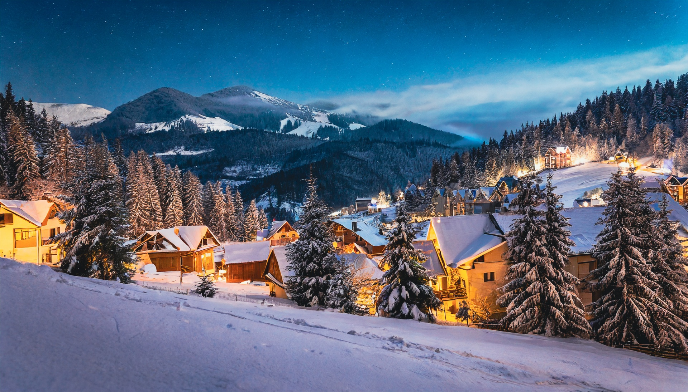

You chose the Right path
You venture through the Right path and already you feel the atmosphere changing. There's a glow not too far away. You feel a sense of adrenaline after seeing a sign of life other than the wild animals that were in the forest. Quickly, you tredge through the snow and finally arrive at the Village.
It's a sleepy town, tucked away where it seems like the common person cannot find it. But you aren't a common person. The villge seems lively but most of the structures are homes, filled with people getting ready for the night.
Something catches your eye however, two buildings with an "Open" sign hagning outside. One looks like a Tavern of sorts and the other an Inn.
Where will you go?
"Snow Landscape, wallpaper" by dendoktoor,freddy. CC0 Public Domain. PublicDomainpictures.net.